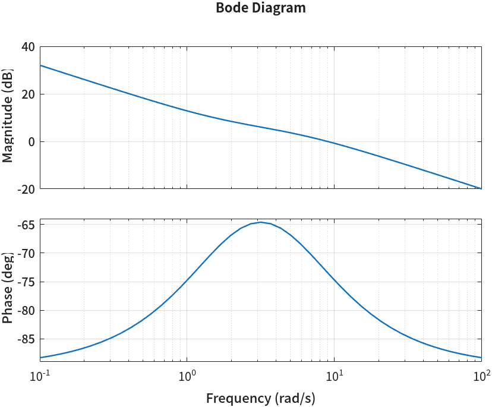
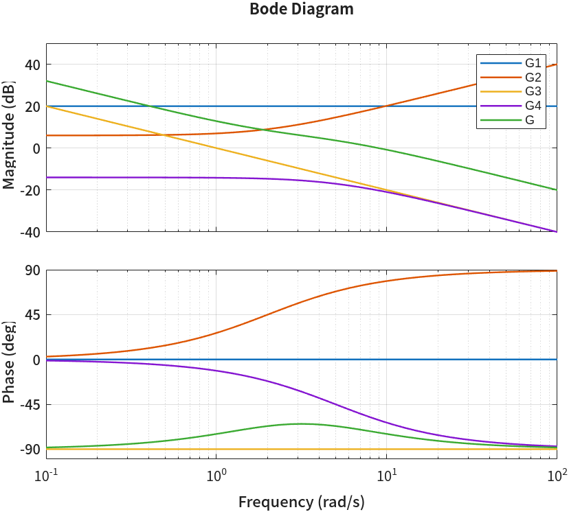
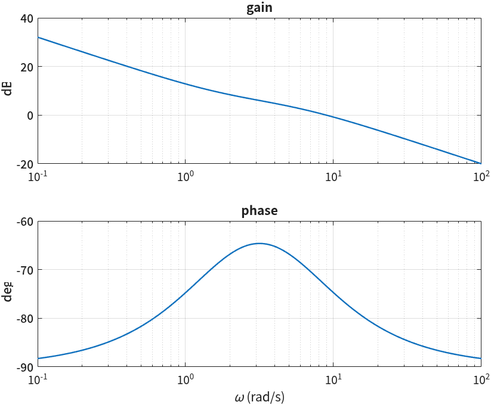
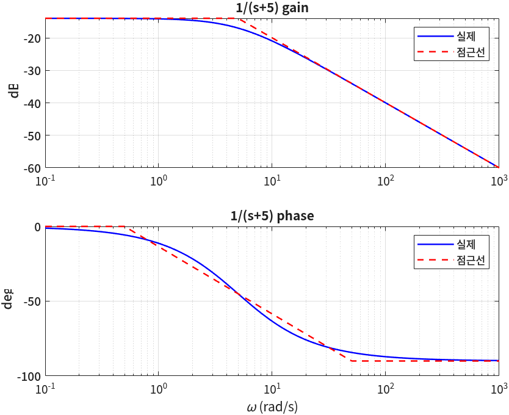
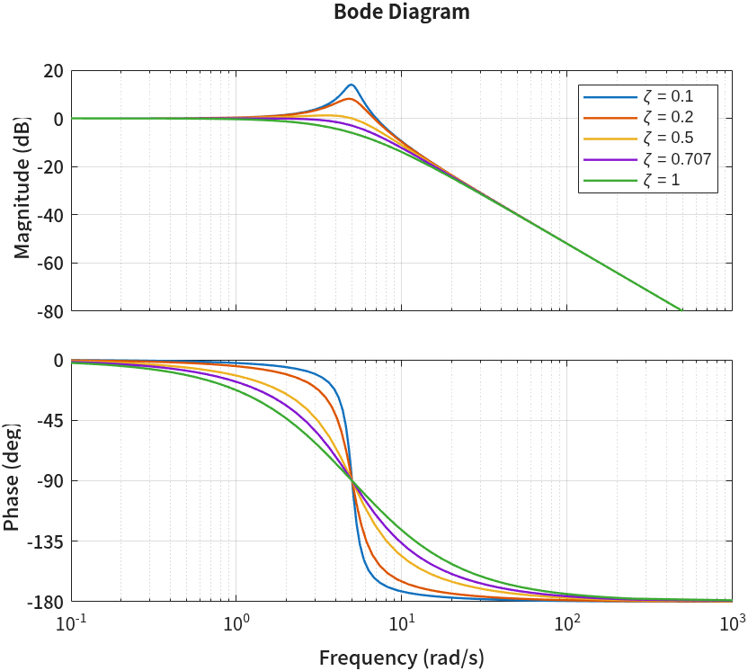
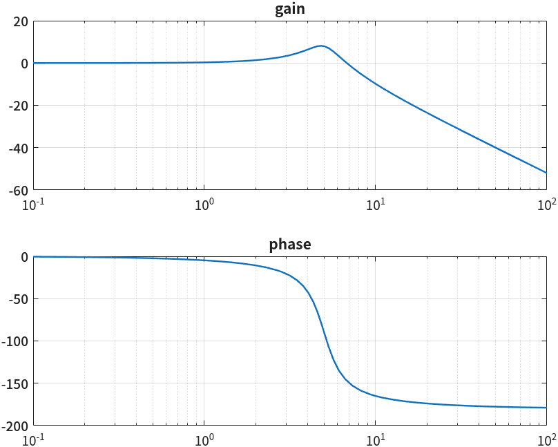
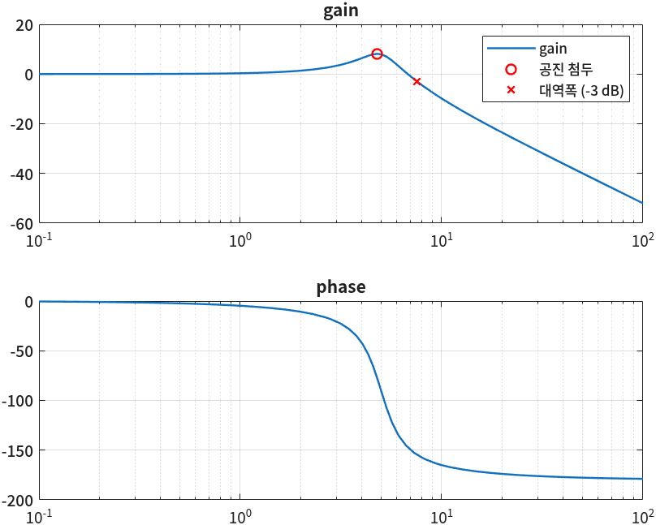
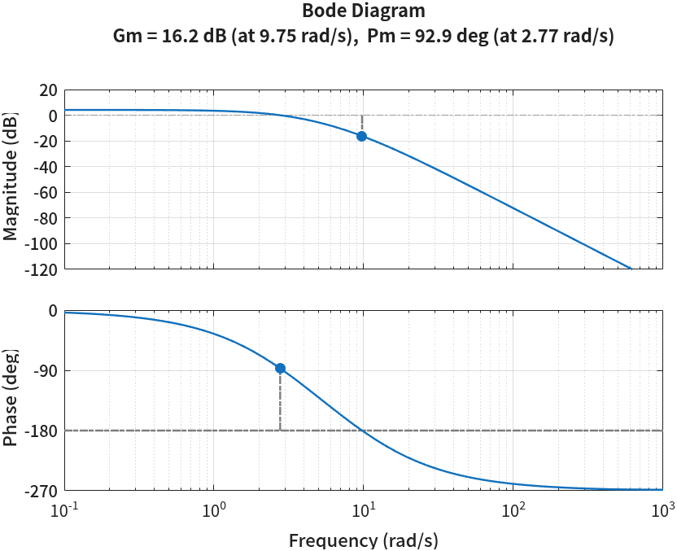

보드 선도와 주파수응답
- 보드 선도의 두 그래프는 각각 무엇을 그린 것인가? 왜 가로축은 로그, 세로축은 dB인가?
- 전달함수가 여러 요소의 곱이면 보드 선도는 왜 그 요소들의 합이 되나?
bode가 돌려주는 값을 직접 꺼내 그리려면 무엇을 조심해야 하나?- 대역폭·공진 첨두값·공진주파수를 MATLAB 함수와 교재 공식으로 각각 구하면 같은 값이 나오나?
- 개루프 보드 선도 한 장으로 폐루프가 얼마나 안정한지 어떻게 읽나?
지난 네 회차(4~7회)는 전부 시간영역이었다. 계단 입력을 넣고 출력이 시간에 따라 어떻게 움직이는지 보고, 극점을 s 평면 어디에 두면 원하는 응답이 나오는지 근궤적으로 찾았다. 오늘은 같은 시스템을 다른 쪽에서 본다. 입력을 계단이 아니라 사인파로 넣고, 주파수를 바꿔 가며 출력이 얼마나 커지고 얼마나 늦어지는지를 잰다. 그 결과를 그린 것이 보드 선도(Bode plot)다.
오늘 할 일은 크게 둘이다. ②~⑤절은 bode 함수의 사용법과 「기본 요소의 합」을 숫자로 확인하는 것,
⑦절은 2차 시스템의 주파수응답 사양(대역폭·공진)을 함수와 공식으로 각각 구해 맞춰 보는 것이다.
그 사이 ⑥절에서 보드 선도를 손으로 그릴 때 쓰는 점근선을, 마지막 ⑧절에서 보드 선도의 가장 흔한 쓰임인
이득 여유·위상 여유를 다룬다.
한 장 요약
왼쪽 함수 이름보다 오른쪽 열을 먼저 본다. 그 함수가 교재의 어느 개념을 계산하는지가 거기 있다.
| 함수 | 하는 일 | 제어공학에서 쓰는 자리 |
|---|---|---|
bode(G) | 크기(dB)와 위상(deg)을 로그 주파수축에 그린다 | 보드 선도 — \(|G(j\omega)|\), \(\angle G(j\omega)\) |
[mag, phase, w] = bode(G, w) | 그리지 않고 값만 돌려준다. 크기는 dB가 아니다 | 특정 주파수에서의 이득·위상을 숫자로 |
reshape · squeeze | 1×1×N 배열을 벡터로 편다 | bode 출력을 그래프·계산에 쓰기 위해 |
20*log10(mag) | 크기를 데시벨로 | 곱을 합으로 바꾸는 단위 |
semilogx · logspace | 가로축만 로그인 그래프 · 로그 간격 주파수 | 보드 선도를 직접 그리기 |
bandwidth(G) | DC 이득에서 3 dB 떨어지는 주파수 | 대역폭 \(\omega_B\) — 응답 속도 |
[gpk, wpk] = getPeakGain(G) | 크기의 최댓값과 그 주파수 | 공진 첨두값 \(M_r\) · 공진주파수 \(\omega_r\) — 최대초과 |
margin(L) · allmargin(L) | 이득 여유·위상 여유와 교차 주파수 | 개루프로 읽는 폐루프 안정도 |
bode는 그 크기와 각도를 주파수마다 계산하고, 나머지 함수는 그 곡선에서 특정한 점(최댓값, −3 dB 점, 0 dB 점, −180° 점)을 찾아 준다.
① 주파수응답
안정한 선형 시스템에 사인파를 넣으면 무엇이 나올까? 처음 잠깐은 과도응답이 섞이지만, 그것이 사라지고 나면 같은 주파수의 사인파가 나온다. 바뀌는 것은 두 가지뿐이다 — 크기와 위상.
📐 이론과 잇기 — 사인파를 넣으면 무엇이 나오나
입력이 \(u(t) = \sin(\omega t)\)이면 정상상태 출력은
$$ y_{ss}(t) = M(\omega)\,\sin\!\big(\omega t + \phi(\omega)\big) $$이고, 크기와 위상은 전달함수의 \(s\) 자리에 \(j\omega\)를 넣은 복소수에서 바로 나온다.
$$ M(\omega) = |G(j\omega)|, \qquad \phi(\omega) = \angle G(j\omega) $$보드 선도는 이 두 값을 주파수 \(\omega\)에 대해 그린 것이다. 위 칸이 크기, 아래 칸이 위상이다. 크기는 데시벨(dB)로 적는다.
$$ |G(j\omega)|_{\text{dB}} = 20\log_{10}|G(j\omega)| $$숫자를 넣어 본다. \(G_4(s) = \dfrac{1}{s+5}\)에 \(\omega = 5\) rad/s를 넣으면
$$ G_4(j5) = \frac{1}{5 + j5}, \qquad |G_4(j5)| = \frac{1}{\sqrt{5^2 + 5^2}} = \frac{1}{5\sqrt2} = 0.1414 $$ $$ 20\log_{10}(0.1414) = -16.99\ \text{dB}, \qquad \angle G_4(j5) = -\tan^{-1}\frac{5}{5} = -45^\circ $$즉 5 rad/s 사인파를 넣으면 크기가 0.14배로 줄고 위상이 45° 늦어진 사인파가 나온다. ⑥절에서 MATLAB이 같은 두 값(−16.99 dB, −45.0°)을 찍는다.
가로축을 로그로 잡는 이유는 관심 있는 주파수가 0.1 rad/s부터 1000 rad/s까지 몇 자릿수에 걸쳐 있기 때문이다. 로그축에서는 10배 간격(decade, 디케이드)이 같은 길이로 그려진다. 세로축을 dB로 잡는 이유는 ③절에서 본다 — 곱이 합이 된다.
② 보드 선도 그리기 — bode
먼저 기본 요소 네 개를 따로 만들고 곱해서 하나의 전달함수를 만든다. 상수, 1차 영점, 적분기, 1차 극점 — 보드 선도를 손으로 그릴 때 쪼개는 바로 그 단위들이다.
$$ G(s) = \underbrace{10}_{G_1}\cdot\underbrace{(s+2)}_{G_2}\cdot\underbrace{\frac{1}{s}}_{G_3}\cdot\underbrace{\frac{1}{s+5}}_{G_4} = \frac{10s + 20}{s^2 + 5s} $$clc; clear; close all
% 전달함수 만들기 — 기본 요소 네 개의 곱
s = tf('s');
G1 = tf(10); % 상수
G2 = s + 2; % 1차 영점
G3 = 1/s; % 적분기
G4 = 1/(s + 5); % 1차 극점
G = G1*G2*G3*G4
% bode plot 그리기
figure(1)
bode(G)
grid on명령 창 출력
G =
10 s + 20
---------
s^2 + 5 s
Continuous-time transfer function.
Model Properties🆕 이 코드에서 처음 나오는 것
- bode(sys)
- 전달함수
sys의 보드 선도(크기·위상 두 칸)를 그린다. 주파수 범위는 극점·영점 위치를 보고 MATLAB이 알아서 고른다. 여기서는 \(G(s)\)의 보드 선도를 그렸다. - tf(10)
- 숫자 하나도 전달함수 객체로 만들 수 있다(정적 이득). 4회에서 본
tf에 계수 대신 숫자 하나를 준 것이다. 여기서는G1을 다른 요소들과 같은 종류로 맞춰 곱하고 겹쳐 그리기 위해 썼다.

그래프 읽는 법을 정리해 둔다. 가로축 Frequency의 눈금은 \(10^{-1}, 10^0, 10^1, 10^2\) — 한 칸이 10배다. 크기 칸의 0 dB는 「크기 1배」, +20 dB는 10배, −20 dB는 0.1배, +6 dB는 약 2배다. 위상 칸의 −90°는 출력이 입력보다 1/4 주기 늦다는 뜻이다.
여러 시스템 겹쳐 그리기
bode에 전달함수를 여러 개 넘기면 한 그림에 겹쳐 그린다. 3회의 plot(x1, y1, x2, y2)처럼
순서대로 색이 바뀌고, legend의 이름도 같은 순서로 붙는다.
% bode plot 여러 개 동시에 그리기
figure(1)
bode(G1, G2, G3, G4, G)
legend('G1', 'G2', 'G3', 'G4', 'G')
grid on
③ 기본 요소의 합으로 보는 보드 선도
그림에서 「합인 것 같다」를 봤으니 숫자로 확인한다. 왜 합이 되는지부터 세운다.
📐 이론과 잇기 — 곱이 왜 합이 되나
복소수의 곱은 크기끼리 곱하고 각도끼리 더한다. \(G = G_1G_2G_3G_4\)이면
$$ |G(j\omega)| = |G_1(j\omega)|\,|G_2(j\omega)|\,|G_3(j\omega)|\,|G_4(j\omega)| $$ $$ \angle G(j\omega) = \angle G_1(j\omega) + \angle G_2(j\omega) + \angle G_3(j\omega) + \angle G_4(j\omega) $$위상은 그대로 합이다. 크기는 곱인데, 로그를 씌우면 곱이 합이 된다(\(\log ab = \log a + \log b\)).
$$ 20\log_{10}|G| = 20\log_{10}|G_1| + 20\log_{10}|G_2| + 20\log_{10}|G_3| + 20\log_{10}|G_4| $$그래서 보드 선도는 dB와 도(degree)로 그리면 요소별 그림을 위아래로 쌓기만 하면 된다. 손으로 보드 선도를 그리는 방법 전체가 이 한 줄 위에 서 있다.
이 식을 숫자로 확인해 본다. 주파수를 여섯 개(0.1~100 rad/s) 골라 요소마다 dB와 도를 구하고, 네 요소의 값을 더한다. 주파수를 많이 고르면 4×N 행렬이 명령 창을 몇 화면씩 넘겨 읽기 어려우니, 확인용으로는 이 정도면 충분하다.
% 주파수 몇 개만 골라서 기본 요소의 gain(dB)과 phase(deg)를 숫자로 확인한다
w = [0.1 1 2 5 10 100];
G_list = [G1, G2, G3, G4];
wlen = length(w);
gain_list = zeros(4, wlen);
phase_list = zeros(4, wlen);
for i = 1:4
[mag, phase, wout] = bode(G_list(i), w);
gain_list(i, :) = 20*log10(mag);
phase_list(i, :) = phase;
end
gain_list
gain_sum = sum(gain_list, 1)
phase_list
phase_sum = sum(phase_list, 1)명령 창 출력
gain_list =
20.0000 20.0000 20.0000 20.0000 20.0000 20.0000
6.0314 6.9897 9.0309 14.6240 20.1703 40.0017
20.0000 0 -6.0206 -13.9794 -20.0000 -40.0000
-13.9811 -14.1497 -14.6240 -16.9897 -20.9691 -40.0108
gain_sum =
32.0503 12.8400 8.3863 3.6549 -0.7988 -20.0091
phase_list =
0 0 0 0 0 0
2.8624 26.5651 45.0000 68.1986 78.6901 88.8542
-90.0000 -90.0000 -90.0000 -90.0000 -90.0000 -90.0000
-1.1458 -11.3099 -21.8014 -45.0000 -63.4349 -87.1376
phase_sum =
-88.2834 -74.7449 -66.8014 -66.8014 -74.7449 -88.2834🆕 이 코드에서 처음 나오는 것
- [mag, phase, wout] = bode(sys, w)
- 출력 인자를 받으면 그리지 않고 값만 돌려준다.
w를 주면 그 주파수에서만 계산한다.mag는 배율(dB 아님),phase는 도(degree) 단위다. 여기서는 요소 하나씩 꺼내 여섯 주파수의 크기·위상을 표로 모았다. - G_list = [G1, G2, G3, G4]
- 전달함수 객체도 대괄호로 묶어 배열로 만들 수 있다.
G_list(i)가 i번째 전달함수다. 여기서는for문으로 네 요소를 차례로 돌기 위해 묶었다. - sum(A, 1)
- 행렬을 1번 차원(세로) 방향으로 더한다 — 열마다 합 하나. 여기서는 주파수(열)마다 네 요소의 dB·deg를 더했다.
출력 읽는 법. gain_list의 각 행이 요소 하나, 각 열이 주파수 하나다.
둘째 열(\(\omega = 1\))을 세로로 읽으면 \(20 + 6.99 + 0 - 14.15 = 12.84\) — gain_sum의 둘째 값 12.8400과 같다.
phase_list도 둘째 열이 \(0 + 26.57 - 90 - 11.31 = -74.74\) → phase_sum의 −74.7449.
각 줄이 어디서 나왔는지 \(\omega = 1\)에서 손으로 짚어 본다.
| 요소 | \(G_i(j1)\) | 크기 → dB | 위상 |
|---|---|---|---|
| \(G_1 = 10\) | \(10\) | \(20\log_{10}10 = 20\) | \(0^\circ\) |
| \(G_2 = s+2\) | \(2 + j1\) | \(20\log_{10}\sqrt5 = 6.99\) | \(\tan^{-1}(1/2) = 26.57^\circ\) |
| \(G_3 = 1/s\) | \(1/(j1) = -j\) | \(20\log_{10}1 = 0\) | \(-90^\circ\) |
| \(G_4 = 1/(s+5)\) | \(1/(5 + j1)\) | \(-20\log_{10}\sqrt{26} = -14.15\) | \(-\tan^{-1}(1/5) = -11.31^\circ\) |
gain_list·phase_list의 둘째 열과 소수 둘째 자리까지 같다.
phase_sum이 \(\omega = 2\)와 \(\omega = 5\)에서 똑같이 −66.80°인 것도 눈여겨볼 만하다.
영점 2와 극점 5가 만드는 위상 「봉우리」는 두 값의 기하평균 \(\sqrt{2\cdot5} = 3.16\) rad/s를 중심으로 좌우 대칭이다 — ②절 그림에서 위상이 가장 높이 솟은 자리다.
④ bode의 출력값 — reshape·squeeze
이번에는 전체 시스템 \(G\)에 대해 같은 값을 직접 구한다. 요소별 합과 같은 숫자가 나와야 한다.
그런데 여기서 한 번 걸리는 것이 있다 — bode가 돌려주는 mag는 벡터가 아니다.
% 전체 시스템 G의 gain, phase를 같은 주파수에서 구한다
[mag_G, phase_G, wout] = bode(G, w);
size(mag_G)
mag_G = reshape(mag_G, [1, length(w)]);
gain_G = 20*log10(mag_G)
phase_G = reshape(phase_G, [1, length(w)])명령 창 출력
ans =
1 1 6
gain_G =
32.0503 12.8400 8.3863 3.6549 -0.7988 -20.0091
phase_G =
-88.2834 -74.7449 -66.8014 -66.8014 -74.7449 -88.2834🆕 이 코드에서 처음 나오는 것
- reshape(A, [m, n])
- 원소 개수는 그대로 두고 배열의 모양만 m×n으로 바꾼다. 여기서는 1×1×6 배열을 1×6 행 벡터로 폈다.
size(mag_G)의 출력 1 1 6이 핵심이다. mag는 3차원 배열이다.
앞의 두 차원은 「출력 개수 × 입력 개수」이고 셋째 차원이 주파수다.
입력·출력이 여럿인 시스템(MIMO)이면 주파수마다 행렬 하나가 나오기 때문에 이 모양으로 통일해 둔 것이다.
이 과목의 시스템은 전부 입력 하나·출력 하나라서 앞의 두 차원이 늘 1×1이다.
그대로 plot에 넣으면 그래프가 그려지지 않거나 오류가 나므로, 벡터로 펴는 한 줄이 필요하다.
gain_G와 phase_G는 ③절의 gain_sum·phase_sum과 여섯 자리 모두 같다.
요소별로 구해 더한 값과 전체를 한 번에 구한 값이 같다 — ③절의 식이 숫자로 확인된 것이다.
⚠️ mag는 dB가 아니다
bode(G)가 그리는 그림은 dB인데, [mag, phase] = bode(G, w)가 돌려주는 mag는 배율이다.
그래서 dB로 보려면 반드시 20*log10(mag)을 거친다. 이 줄을 빠뜨리고 mag를 그대로 그리면
모양이 전혀 다른 곡선이 나오는데, 오류는 나지 않아 눈치채기 어렵다.
반대로 위상 phase는 그림과 같은 도(degree)다. 라디안이 아니다.
⑤ 직접 그리기 — semilogx
값을 꺼냈으면 직접 그릴 수 있다. 보드 선도의 가로축은 로그이므로 plot 대신 가로축만 로그인 semilogx를 쓴다.
앞의 여섯 개 주파수처럼 점이 듬성듬성하면 곡선이 꺾은선처럼 보인다.
그래서 logspace로 로그 간격 200개를 만들어 매끈하게 그렸다.
% gain, phase를 이용해 직접 bode plot 그리기 — 주파수를 촘촘하게
w = logspace(-1, 2, 200);
[mag_G, phase_G] = bode(G, w);
gain_G = 20*log10(squeeze(mag_G));
phase_G = squeeze(phase_G);
figure(1)
subplot(2,1,1)
semilogx(w, gain_G)
title('gain')
ylabel('dB')
grid on
subplot(2,1,2)
semilogx(w, phase_G)
title('phase')
ylabel('deg')
xlabel('\omega (rad/s)')
grid on🆕 이 코드에서 처음 나오는 것
- logspace(a, b, n)
- \(10^a\)부터 \(10^b\)까지 로그 간격으로 n개의 수를 만든다. 2회의
:(등차)와 달리 10배 구간마다 같은 개수의 점이 들어간다. 여기서는 0.1~100 rad/s를 200개로 나눴다. - squeeze(A)
- 크기가 1인 차원을 모두 없앤다. 1×1×200 배열이 200×1 열 벡터가 된다.
reshape와 달리 크기를 적어 줄 필요가 없다. 여기서는mag_G·phase_G를 벡터로 펴는 데 썼다. - semilogx(x, y)
plot과 같은데 가로축만 로그 눈금이다. 선 스타일·title·grid는plot과 똑같이 붙는다. 여기서는 크기(dB)와 위상(deg)을 주파수에 대해 그렸다.- xlabel('\omega (rad/s)')
- 글자 안의
\omega는 그리스 문자 ω로 그려진다(TeX 표기).\zeta도 같은 방식이다.

bode(G) 그림과 모양이 같은지 본다. 크기 칸에서 \(\omega = 0.1\)일 때 약 32 dB, \(\omega = 10\)일 때 0 dB 바로 아래(−0.80 dB) — ③절 표의 값이다.⑥ 점근선 근사
MATLAB이 없던 시절에는 보드 선도를 어떻게 그렸을까? 각 요소를 직선 몇 개로 근사해 그리고 ③절대로 더했다. 이 직선을 점근선(asymptote)이라 하고, 직선이 꺾이는 주파수를 꺾임 주파수(corner frequency)라 한다. 지금도 이 근사가 쓸모 있는 이유는, 전달함수만 보고 보드 선도의 모양을 머릿속에서 그려 볼 수 있게 해 주기 때문이다.
기본 요소 다섯 종류의 점근선을 표로 모은다. \(a\)는 꺾임 주파수다.
| 요소 | 크기 점근선 | 위상 점근선 |
|---|---|---|
| 상수 \(K\) | \(20\log_{10}K\) 수평선 | \(0^\circ\) (\(K>0\)) |
| 미분기 \(s\) | +20 dB/decade, \(\omega = 1\)에서 0 dB | \(+90^\circ\) |
| 적분기 \(1/s\) | −20 dB/decade, \(\omega = 1\)에서 0 dB | \(-90^\circ\) |
| 1차 영점 \(s/a + 1\) | \(\omega < a\): 0 dB · \(\omega > a\): +20 dB/decade | \(a/10\)까지 0° → \(10a\)까지 +90°로 직선 (\(a\)에서 +45°) |
| 1차 극점 \(1/(s/a + 1)\) | \(\omega < a\): 0 dB · \(\omega > a\): −20 dB/decade | \(a/10\)까지 0° → \(10a\)까지 −90°로 직선 (\(a\)에서 −45°) |
| 2차 극점 \(\dfrac{\omega_n^2}{s^2 + 2\zeta\omega_n s + \omega_n^2}\) | \(\omega < \omega_n\): 0 dB · \(\omega > \omega_n\): −40 dB/decade | 0° → −180°, \(\omega_n\)에서 −90°. \(\zeta\)가 작을수록 가파르다 |
점근선이 실제 곡선과 얼마나 다른지 \(G_4 = 1/(s+5)\) 하나로 확인한다. 점근선은 위 표의 규칙을 그대로 코드로 옮긴 것이다.
% 1차 극점 1/(s+5)의 점근선과 실제 곡선 비교
w = logspace(-1, 3, 300);
[mag4, phase4] = bode(G4, w);
gain4 = 20*log10(squeeze(mag4));
phase4 = squeeze(phase4);
% 점근선 — 꺾임 주파수 5 rad/s
wc = 5;
gain_asym = -20*log10(wc) * ones(size(w)); % 낮은 주파수: 1/5 → -14 dB
high = w > wc;
gain_asym(high) = -20*log10(w(high)); % 높은 주파수: 1/w → -20 dB/dec
phase_asym = zeros(size(w)); % wc/10 까지 0도
mid = w > wc/10 & w < wc*10;
phase_asym(mid) = -45*(log10(w(mid)) - log10(wc/10)); % 두 decade 동안 -90도까지
phase_asym(w >= wc*10) = -90;
figure(1)
subplot(2,1,1)
semilogx(w, gain4, 'b-', w, gain_asym, 'r--')
legend('실제', '점근선')
ylabel('dB')
title('1/(s+5) gain')
grid on
subplot(2,1,2)
semilogx(w, phase4, 'b-', w, phase_asym, 'r--')
legend('실제', '점근선')
ylabel('deg')
xlabel('\omega (rad/s)')
title('1/(s+5) phase')
grid on
% 꺾임 주파수에서 실제 값과 점근선의 차이
[m5, p5] = bode(G4, wc);
fprintf('w = %g 에서 실제 gain = %.2f dB, 점근선 = %.2f dB, 차이 = %.2f dB\n', ...
wc, 20*log10(m5), -20*log10(wc), 20*log10(m5) + 20*log10(wc))
fprintf('w = %g 에서 실제 phase = %.1f deg\n', wc, p5)명령 창 출력
w = 5 에서 실제 gain = -16.99 dB, 점근선 = -13.98 dB, 차이 = -3.01 dB
w = 5 에서 실제 phase = -45.0 deg🆕 이 코드에서 처음 나오는 것
- high = w > wc
- 비교 연산을 벡터에 쓰면 원소마다 참(1)·거짓(0)인 논리 배열이 나온다.
gain_asym(high) = …처럼 인덱스 자리에 넣으면 참인 원소만 고친다(논리 인덱싱). 여기서는 꺾임 주파수보다 높은 쪽만 −20 dB/decade 직선으로 바꿨다.&는 두 논리 배열의 원소별 「그리고」다.

출력 둘째 줄의 −45.0°와 첫 줄의 −16.99 dB는 ①절에서 손으로 구한 값과 같다. 차이 −3.01 dB는 \(20\log_{10}(1/\sqrt2)\)다 — 꺾임 주파수에서는 실수부와 허수부가 같아 크기가 \(\sqrt2\)배로 나뉘기 때문이다. 이 「3 dB」는 ⑦절의 대역폭 정의에 다시 나온다.
2차 요소와 제동비
1차 요소는 점근선에서 많아야 3 dB 벗어난다. 2차 요소는 다르다. 제동비 \(\zeta\)가 작으면 꺾임 주파수 근처에서 곡선이 점근선 위로 솟는다. \(\omega_n = 5\)로 두고 \(\zeta\)만 바꿔 겹쳐 그린다.
% 2차 요소 wn^2/(s^2 + 2*zeta*wn*s + wn^2) — 제동비에 따라 공진 봉우리가 달라진다
wn = 5;
zetas = [0.1 0.2 0.5 0.707 1];
figure(1)
hold on
for k = 1:length(zetas)
z = zetas(k);
bode(tf(wn^2, [1 2*z*wn wn^2]))
end
hold off
legend('\zeta = 0.1', '\zeta = 0.2', '\zeta = 0.5', '\zeta = 0.707', '\zeta = 1')
grid on
이 봉우리가 공진(resonance)이다. 4회에서 \(\zeta\)가 작을수록 계단응답의 최대초과가 커진다는 것을 봤다. 주파수영역에서는 같은 사실이 「봉우리가 높다」로 보인다. 봉우리의 높이와 위치를 재는 것이 다음 절이다.
⑦ 주파수응답 사양
6회에서 계단응답의 모양을 최대초과·첨두시간·정착시간 같은 숫자 몇 개로 요약했다. 주파수응답에도 같은 역할을 하는 숫자가 있다. 여기서는 2차 시스템 하나로 셋을 구한다.
$$ G_s(s) = \frac{25}{s^2 + 2s + 25} \quad\Rightarrow\quad \omega_n^2 = 25,\ \ 2\zeta\omega_n = 2 \quad\Rightarrow\quad \omega_n = 5,\ \ \zeta = 0.2 $$| 사양 | 정의 | 무엇과 이어지나 |
|---|---|---|
| 대역폭 \(\omega_B\) (bandwidth) | 크기가 DC 이득의 \(1/\sqrt2\)(−3 dB)로 떨어지는 주파수 | 클수록 응답이 빠르다 (상승시간이 짧다) |
| 공진 첨두값 \(M_r\) (resonant peak) | 크기 \(|G(j\omega)|\)의 최댓값 | 클수록 최대초과가 크다 |
| 공진주파수 \(\omega_r\) (resonant frequency) | 최댓값이 나오는 주파수 | 감쇠진동주파수 \(\omega_d\)와 가깝다 |
먼저 \(G_s\)의 보드 선도를 그린다. 이번에는 w를 주지 않아 MATLAB이 주파수를 골랐다.
% 2차 시스템의 주파수 응답 구하기
Gs = 25 / (s^2 + 2*s + 25)
[mag_G, phase_G, wout] = bode(Gs);
figure(2)
% gain 그리기
mag_G = reshape(mag_G, [length(wout), 1]);
gain_G = 20*log10(mag_G);
subplot(2,1,1)
semilogx(wout, gain_G)
title('gain')
grid on
% phase 그리기
phase_G = reshape(phase_G, [length(wout), 1]);
subplot(2,1,2)
semilogx(wout, phase_G)
title('phase')
grid on명령 창 출력
Gs =
25
--------------
s^2 + 2 s + 25
Continuous-time transfer function.
Model Properties
bandwidth · getPeakGain
% 대역폭(bandwidth)
fb = bandwidth(Gs)
% 첨두공진값(resonant peak), 공진주파수(resonant frequency)
[gpeak, fpeak] = getPeakGain(Gs)명령 창 출력
fb =
7.5450
gpeak =
2.5515
fpeak =
4.7980🆕 이 코드에서 처음 나오는 것
- fb = bandwidth(sys)
- DC 이득에서 3 dB 떨어지는 첫 주파수(rad/s)를 돌려준다. 여기서는 \(G_s\)의 대역폭 7.5450 rad/s를 구했다.
- [gpeak, fpeak] = getPeakGain(sys)
- 크기의 최댓값(배율, dB 아님)과 그 주파수(rad/s)를 돌려준다. 여기서는 공진 첨두값 2.5515와 공진주파수 4.7980을 구했다.
변수 이름 fb·fpeak는 f(주파수)로 시작하지만 단위는 Hz가 아니라 rad/s다.
공진 첨두값 2.5515배는 dB로 \(20\log_{10}2.5515 = 8.14\) dB — 그림의 봉우리 높이다.
공식으로 직접 계산
같은 세 값을 교재 공식으로 구해 맞춰 본다. 공식부터 유도한다.
📐 이론과 잇기 — 2차 시스템의 공진과 대역폭
\(G(s) = \dfrac{\omega_n^2}{s^2 + 2\zeta\omega_n s + \omega_n^2}\)에 \(s = j\omega\)를 넣으면 \((j\omega)^2 = -\omega^2\)이므로
$$ G(j\omega) = \frac{\omega_n^2}{(\omega_n^2 - \omega^2) + j\,2\zeta\omega_n\omega} $$크기의 제곱은 분모의 실수부·허수부 제곱합으로 나눈 것이다. 분자·분모를 \(\omega_n^4\)로 나누고 \(u = (\omega/\omega_n)^2\)로 두면
$$ |G(j\omega)|^2 = \frac{\omega_n^4}{(\omega_n^2 - \omega^2)^2 + (2\zeta\omega_n\omega)^2} = \frac{1}{(1-u)^2 + 4\zeta^2 u} = \frac{1}{D(u)} $$공진주파수 — 크기가 최대인 곳은 \(D(u)\)가 최소인 곳이다. \(D\)를 \(u\)로 미분해 0으로 놓는다.
$$ \frac{dD}{du} = -2(1-u) + 4\zeta^2 = 0 \quad\Rightarrow\quad u_r = 1 - 2\zeta^2 \quad\Rightarrow\quad \omega_r = \omega_n\sqrt{1 - 2\zeta^2} $$\(u_r > 0\)이어야 하므로 \(\zeta < 1/\sqrt2 = 0.707\)일 때만 봉우리가 있다 — ⑥절 그림에서 \(\zeta = 0.707\)과 1의 선에 봉우리가 없던 이유다.
공진 첨두값 — \(u_r\)을 \(D\)에 다시 넣는다.
$$ D(u_r) = (2\zeta^2)^2 + 4\zeta^2(1 - 2\zeta^2) = 4\zeta^4 + 4\zeta^2 - 8\zeta^4 = 4\zeta^2(1 - \zeta^2) $$ $$ M_r = \frac{1}{\sqrt{D(u_r)}} = \frac{1}{2\zeta\sqrt{1 - \zeta^2}} $$대역폭 — 크기가 \(1/\sqrt2\)이면 \(|G|^2 = 1/2\), 즉 \(D(u) = 2\)이다.
$$ (1-u)^2 + 4\zeta^2 u = 2 \quad\Rightarrow\quad u^2 - (2 - 4\zeta^2)\,u - 1 = 0 $$근의 공식에서 양수인 근만 남긴다.
$$ u_B = (1 - 2\zeta^2) + \sqrt{(1 - 2\zeta^2)^2 + 1} = 1 - 2\zeta^2 + \sqrt{4\zeta^4 - 4\zeta^2 + 2} $$ $$ \omega_B = \omega_n\sqrt{1 - 2\zeta^2 + \sqrt{4\zeta^4 - 4\zeta^2 + 2}} $$숫자를 넣어 본다 (\(\omega_n = 5\), \(\zeta = 0.2\)).
$$ \omega_r = 5\sqrt{1 - 0.08} = 5\sqrt{0.92} = 4.7958 $$ $$ M_r = \frac{1}{2(0.2)\sqrt{1 - 0.04}} = \frac{1}{0.4 \times 0.97980} = 2.5516 $$ $$ \omega_B = 5\sqrt{0.92 + \sqrt{0.0064 - 0.16 + 2}} = 5\sqrt{0.92 + 1.35882} = 5 \times 1.50958 = 7.5479 $$코드는 이 세 식을 그대로 옮긴 것이다. 공진 첨두값은 공식과 \(|G_s(j\omega_r)|\) 두 가지로 구했다.
% 제동비와 고유주파수로 직접 계산
[wn, zeta] = damp(Gs);
wn = wn(1); zeta = zeta(1);
fprintf('damping ratio = %1.1f, natural frequency = %1.1f\n', zeta, wn)
fpeak_myself = wn*sqrt(1 - 2*zeta^2)
% 공식으로 구한 첨두공진값과 G(j*w_peak)의 크기
gpeak_formula = 1 / (2*zeta*sqrt(1 - zeta^2))
gpeak_myself = abs(evalfr(Gs, 1i*fpeak_myself))
fb_myself = wn*sqrt(1 - 2*zeta^2 + sqrt(4*zeta^4 - 4*zeta^2 + 2))명령 창 출력
damping ratio = 0.2, natural frequency = 5.0
fpeak_myself =
4.7958
gpeak_formula =
2.5516
gpeak_myself =
2.5516
fb_myself =
7.5479
공식으로 구한 세 값 4.7958 · 2.5516 · 7.5479가 바로 위 유도의 숫자와 같다.
그런데 bandwidth·getPeakGain의 결과(7.5450 · 2.5515 · 4.7980)와 비교하면 소수 셋째 자리부터 조금씩 다르다.
공식이 틀렸나, 함수가 틀렸나?
⚠️ 함수의 기본 설정이 공식과 다르다
둘 다 틀리지 않았다. 함수의 기본값이 공식의 정의와 조금 다를 뿐이다.
bandwidth는 기본적으로 정확히 −3 dB 떨어지는 점을 찾는다. 공식은 \(1/\sqrt2\), 즉 \(-10\log_{10}2 = -3.0103\) dB 점이다. 0.01 dB 차이가 주파수에서 0.003 rad/s 차이를 만든다.getPeakGain은 계산 시간을 아끼려고 기본적으로 상대 오차 1% 안에서 봉우리를 찾고 멈춘다.
둘째 인자로 기준을 공식과 똑같이 주면 값도 똑같아진다.
% 기준을 공식과 똑같이 맞추면 값도 똑같아진다
fb_exact = bandwidth(Gs, -10*log10(2)) % -3 dB 대신 1/sqrt(2) = -3.0103 dB
[gpeak_exact, fpeak_exact] = getPeakGain(Gs, 1e-6) % 상대 오차 허용치 1% → 1e-6명령 창 출력
fb_exact =
7.5479
gpeak_exact =
2.5516
fpeak_exact =
4.7958세 값이 이제 공식(7.5479 · 2.5516 · 4.7958)과 표시된 자리까지 같다. MATLAB 함수의 결과가 손계산과 어긋나면
그 함수의 기본 인자를 먼저 의심하면 덜 헤맨다. doc bandwidth에 둘째 인자 dbdrop이 설명돼 있다.
📐 이론과 잇기 — 공진 첨두값과 최대초과
같은 \(\zeta = 0.2\)로 4회의 최대초과 공식을 계산하면
$$ \%OS = e^{-\zeta\pi/\sqrt{1-\zeta^2}} \times 100 = e^{-0.6283/0.97980} \times 100 = e^{-0.6413}\times 100 = 52.7\% $$\(M_r\)과 \(\%OS\)는 둘 다 \(\zeta\) 하나로만 정해지는 값이다. 그래서 「봉우리가 8 dB나 솟는 시스템은 계단응답이 절반 넘게 튀어 오른다」처럼 주파수영역의 숫자를 시간영역의 모양으로 옮겨 읽을 수 있다. 공진주파수 4.80 rad/s도 감쇠진동주파수 \(\omega_d = \omega_n\sqrt{1-\zeta^2} = 4.90\) rad/s와 가깝다 — 계단응답이 출렁이는 빠르기다.
보드 선도에 사양 표시
구한 두 점을 그림에 찍는다. 크기 칸이 dB이므로 공진 첨두값도 20*log10을 거쳐 찍고,
대역폭 점은 세로 위치를 \(-10\log_{10}2\) dB(= \(1/\sqrt2\))에 둔다.
% bode plot에 사양 표시
figure(2)
subplot(2,1,1)
hold on
plot(fpeak, 20*log10(gpeak), 'ro')
plot(fb, -10*log10(2), 'rx') % 1/sqrt(2) 를 dB로
hold off
legend('gain', '공진 첨두', '대역폭 (-3 dB)')
⑧ 이득 여유와 위상 여유 — margin
지금까지는 폐루프 전달함수 \(G_s\)의 보드 선도를 봤다. 보드 선도가 설계에서 가장 많이 쓰이는 자리는 따로 있다 — 개루프 전달함수 \(KG(s)\)의 보드 선도 한 장으로 폐루프가 얼마나 안정한지를 읽는 것이다.
📐 이론과 잇기 — −1이 되는 점
단위 피드백 폐루프의 특성방정식은 \(1 + KG(s) = 0\), 즉 \(KG(s) = -1\)이다. 5회 근궤적의 각도·크기 조건과 같은 식이다. \(-1\)은 크기가 1(0 dB)이고 각도가 −180°인 복소수다. 극점이 허수축 위 \(s = j\omega\)에 오면 폐루프가 안정의 경계에 서는데, 그때 보드 선도 위에서 크기 0 dB와 위상 −180°가 같은 주파수에서 동시에 일어난다. 이 경계까지 얼마나 남았는지를 두 숫자로 잰다.
- 이득 여유 GM (gain margin) — 위상이 −180°인 주파수 \(\omega_{pc}\)에서 크기가 1이 되려면 이득을 몇 배 더 키울 수 있나: \(\ \mathrm{GM} = 1/|KG(j\omega_{pc})|\)
- 위상 여유 PM (phase margin) — 크기가 1(0 dB)인 주파수 \(\omega_{gc}\)에서 위상이 −180°까지 얼마나 남았나: \(\ \mathrm{PM} = 180^\circ + \angle KG(j\omega_{gc})\)
둘 다 양수면 폐루프가 안정하다(이 과목에서 다루는 개루프가 안정한 시스템의 경우).
예제는 7회의 플랜트 \(G(s) = \dfrac{1}{(s+3)(s+5)(s+10)}\)에 비례 이득 \(K = 242\)를 건 것이다. 242는 보상 전 근궤적이 최대초과 20% 선과 만나는 이득이다.
% 개루프 전달함수 K*G(s) — 7회 예제의 플랜트에 비례 이득 K = 242
otf = 1/((s+3)*(s+5)*(s+10));
K = 242;
figure(3)
margin(K*otf)
grid on
[Gm, Pm, Wcg, Wcp] = margin(K*otf)
Gm_dB = 20*log10(Gm)명령 창 출력
Gm =
6.4479
Pm =
92.8820
Wcg =
9.7479
Wcp =
2.7672
Gm_dB =
16.1884🆕 이 코드에서 처음 나오는 것
- margin(L)
- 출력 인자 없이 부르면 개루프
L의 보드 선도를 그리고 이득 여유·위상 여유를 제목에 적고, 두 교차점을 표시한다. - [Gm, Pm, Wcg, Wcp] = margin(L)
- 그리지 않고 값만 돌려준다.
Gm은 배율(dB 아님),Pm은 도,Wcg는 위상 −180° 교차 주파수(\(\omega_{pc}\)),Wcp는 0 dB 교차 주파수(\(\omega_{gc}\))다. 여기서는 \(K = 242\)일 때의 여유를 구했다.

출력 읽는 법. Gm = 6.4479는 「이득을 6.45배까지 키워도 된다」는 뜻이고, dB로 바꾼 Gm_dB = 16.1884가 그림 제목의 16.2 dB다.
이 숫자가 맞는지 4회에서 배운 안정도 판별(Routh)로 따로 확인해 본다.
📐 이론과 잇기 — Routh 판별과 맞춰 보기
폐루프 특성방정식은
$$ (s+3)(s+5)(s+10) + K = s^3 + 18s^2 + 95s + (150 + K) = 0 $$3차식 \(s^3 + a_2 s^2 + a_1 s + a_0\)이 안정하려면 모든 계수가 양수이고 \(a_2a_1 > a_0\)이어야 한다(Routh 표의 \(s^1\) 행).
$$ 18 \times 95 > 150 + K \quad\Rightarrow\quad K < 1710 - 150 = 1560 $$경계 \(K = 1560\)에서 Routh 표의 \(s^2\) 행이 보조방정식 \(18s^2 + 1710 = 0\)을 주므로 극점은 \(s = \pm j\sqrt{95} = \pm j9.7468\)이다. 이득 여유는 \(1560/242 = 6.4463\)배 = 16.19 dB.
MATLAB의 Wcg = 9.7479, Gm = 6.4479와 상대 차이 0.03% 안에서 맞는다.
손계산은 정확한 값이고, 남은 작은 차이는 margin이 교차점을 수치 계산으로 찾는 데서 오는 것으로 보인다.
이득 여유만큼 이득을 키우면 정말 경계에 서는지, 폐루프 극점을 직접 구해 본다. allmargin은 여유 값을 구조체 하나로 모두 돌려준다.
% 이득 여유만큼 K를 키우면 폐루프가 안정 경계에 선다
K_limit = K * Gm
pole(feedback(K_limit*otf, 1))
% allmargin 은 여유를 구조체 하나로 모두 돌려준다
mg = allmargin(K*otf);
disp(mg)명령 창 출력
K_limit =
1.5604e+03
ans =
-18.0010 + 0.0000i
0.0005 + 9.7477i
0.0005 - 9.7477i
GainMargin: 6.4479
GMFrequency: 9.7479
PhaseMargin: 92.8820
PMFrequency: 2.7672
DelayMargin: 0.5858
DMFrequency: 2.7672
Stable: 1🆕 이 코드에서 처음 나오는 것
- mg = allmargin(L)
- 이득 여유·위상 여유·지연 여유와 각각의 주파수, 폐루프 안정 여부(
Stable)를 구조체 하나에 담아 돌려준다. 교차점이 여러 개면 전부 담는다(margin은 가장 작은 여유 하나만). 여기서는 \(K = 242\)의 여유를 한 번에 봤다. - disp(mg)
- 구조체를
disp로 찍으면 「필드 이름: 값」이 한 줄씩 나온다. 필드 하나는mg.GainMargin처럼 점(.)으로 꺼낸다.
출력 읽는 법. K_limit = 1.5604e+03(1560.4)로 폐루프를 만들면 극점 셋 중 둘이 0.0005 ± j9.7477이다.
실수부가 사실상 0, 허수부가 \(\sqrt{95}\) — 허수축 위에 올라앉은 것이다. 이득 여유가 「안정의 경계까지 남은 이득 배수」라는 정의가 극점으로 확인됐다.
allmargin의 Stable: 1은 \(K = 242\)의 폐루프가 안정하다는 뜻이고,
DelayMargin: 0.5858은 루프 안에 0.59초까지의 시간 지연이 생겨도 견딘다는 뜻이다(위상 여유 92.9°를 \(\omega_{gc}\)로 나눠 초로 바꾼 값).
⚠️ margin에는 개루프를 넣는다
여유는 개루프 \(KG(s)\)의 보드 선도에서 읽는 값이다. feedback(K*otf, 1)로 이미 닫은 폐루프를 margin에 넣으면
오류 없이 숫자가 나오지만, 그것은 「그 폐루프를 한 번 더 피드백으로 감았을 때」의 여유라서 지금 시스템과 상관이 없다.
⑦절의 대역폭·공진은 반대로 폐루프의 사양이다. 무엇을 넣는지가 함수마다 다르다.
🧪 실습
제동비를 바꾸면 주파수응답 사양이 어떻게 움직이나 · 이득을 키우면 여유가 어떻게 줄어드나
이걸 해 보면 무엇을 알게 되나: ⑦절의 공식과 MATLAB 함수가 다른 \(\zeta\)에서도 맞는지, 그리고 이득 여유가 정말 「이득을 몇 배 더 키울 수 있나」인지를 직접 확인한다.
준비물: MATLAB, 이 회차의 코드 조각. 스크립트 파일(lab08.m) 하나에 이어서 쓴다.
- (5분)
Gs = 25/(s^2 + 2*zeta*5*s + 25)꼴로 \(\zeta = 0.1\)인 시스템을 만들고bode로 그린다. - (10분) ⑦절의 세 공식으로 \(\omega_r\), \(M_r\), \(\omega_B\)를 계산하고,
bandwidth(Gs, -10*log10(2))와getPeakGain(Gs, 1e-6)의 결과와 나란히fprintf로 찍는다. - (5분) 같은 것을 \(\zeta = 0.5\)로 반복한다. \(\omega_r\)과 \(M_r\)의 공식이 여전히 쓸 수 있는 범위인지(\(\zeta < 0.707\)) 확인한다.
- (5분) ⑧절의
otf에 \(K = 500\), \(1000\), \(1500\)을 차례로 넣어[Gm, Pm] = margin(K*otf)를 구하고,K*Gm을 함께 찍는다. - (5분) \(K = 1500\)과 \(K = 1600\)으로
step(feedback(K*otf, 1))을 그려 비교한다.
이렇게 되면 성공이다: 2·3단계에서 공식과 함수의 값이 표시된 자리까지 같다.
4단계의 K*Gm이 세 경우 모두 약 1560으로 같고, \(K\)가 커질수록 Gm과 Pm이 함께 줄어든다.
5단계에서 \(K = 1500\)은 오래 출렁이다가 결국 가라앉고, \(K = 1600\)은 출렁임이 점점 커진다.
📝 연습문제
답은 싣지 않는다. 손으로 먼저 구하고 MATLAB으로 확인해 보세요.
-
\(G(s) = \dfrac{100(s+1)}{s(s+10)(s+20)}\)를 상수와 표준형(\(s/a+1\) 꼴)의 곱으로 고쳐 쓰고, 크기 점근선의 꺾임 주파수와 각 구간의 기울기(dB/decade)를 적으세요.
\(\omega = 0.1\)에서 점근선 값(dB)을 손으로 구한 뒤
bode(G, 0.1)로 얻은 크기와 비교하세요. -
③절의
for문을 그대로 써서 연습문제 1의 \(G\)를 기본 요소 네 개(상수, \(s+1\), \(1/s\), \(1/((s+10)(s+20))\))로 쪼개고, \(\omega = 1, 10, 100\)에서 요소별 dB 합이bode(G, w)의 결과와 같은지 확인하는 코드를 쓰세요. -
\(\omega_n = 10\)인 2차 시스템에서 공진 첨두값이 \(M_r = 1.5\)가 되는 \(\zeta\)를 공식으로 구하고, 그 시스템을 만들어
getPeakGain으로 확인하세요. 같은 \(\zeta\)로 최대초과(%)도 계산해 보세요. -
⑧절의
otf에서 위상 여유가 45°가 되는 \(K\)를 찾고 싶다. 위상이 −135°가 되는 주파수를bode의 출력에서 찾고, 그 주파수에서 크기가 1이 되도록 \(K\)를 정하는 코드를 쓰세요. 구한 \(K\)를margin에 넣어 PM이 45°인지 확인하세요.
✅ 점검
조금 더 알아두면
보드 선도를 Hz로, 또는 크기를 배율로 그리고 싶을 때 — bodeplot
bode는 언제나 rad/s · dB · deg로 그린다. 단위를 바꾸려면 bodeplot으로 그리고 옵션 객체를 넘긴다.
opts = bodeoptions;
opts.FreqUnits = 'Hz'; % 가로축을 Hz로
opts.MagUnits = 'abs'; % 세로축을 배율로
bodeplot(G, opts)실험실에서 함수 발생기로 재는 주파수는 보통 Hz이므로, 측정값과 비교할 때 쓸모가 있다. \(\omega = 2\pi f\)를 잊지 않는다.
나이퀴스트 선도 — nyquist
보드 선도는 크기와 위상을 두 그래프로 나눠 그렸다. 같은 \(G(j\omega)\)를 복소평면 위의 점 하나로 찍고 \(\omega\)를 0에서 ∞로 움직이면 곡선 하나가 된다.
이것이 나이퀴스트 선도이고, nyquist(K*otf)로 그린다. ⑧절의 「−1이 되는 점」이 이 그림에서는 말 그대로 점 \((-1, 0)\)이다.
곡선이 그 점을 얼마나 멀리 돌아가는지가 이득 여유·위상 여유다. 개루프가 불안정하거나 교차가 여러 번 일어나는 시스템은 보드 선도보다 나이퀴스트 선도로 판단하는 것이 안전하다.